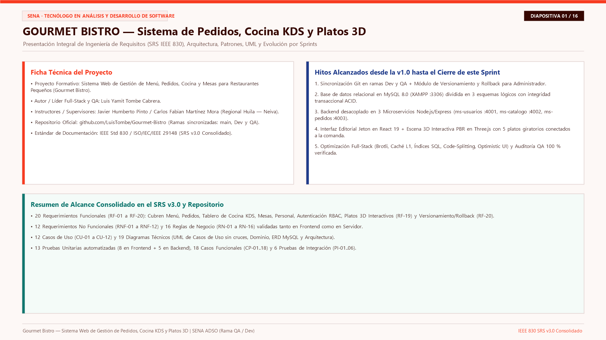

Gourmet Bistro · SENA ADSO
01. Portada Ejecutiva — Gourmet Bistro & SRS IEEE 830
01. Portada Ejecutiva — Gourmet Bistro & SRS IEEE 830
02. Planteamiento del Problema, Justificación y Alcance MVP
03. Evolución del Proyecto (De la v1.0 al Cierre del Sprint v3.0)
04. Lenguajes de Programación: Al Comienzo vs. Al Final del Sprint
05. Arquitectura de Software: 3 Microservicios + Frontend 3D + MySQL 8.0
06. Modelo Conceptual de Dominio y Matriz de Permisos (RBAC)
07. Patrones de Diseño Arquitectónicos, de Dominio y Frontend
08. Requerimientos Funcionales (RF-01 a RF-20) e Historias (HU-01 a HU-12)
09. Requerimientos No Funcionales (RNF-01..12) y Reglas de Negocio (RN-01..16)
10. Diagrama UML General de Casos de Uso del Sistema (CU-01 a CU-12)
11. Diagramas UML por Módulo: Acceso (M1) y Menú & Platos 3D (M2)
12. Diagramas UML por Módulo: Pedidos y Comedor (M3) y Cocina KDS (M4)
13. Diagramas UML por Módulo: Administración (M5) y Casos CU-11 / CU-12
14. Modelo de Datos y Diagrama Entidad-Relación (ERD MySQL 8.0)
15. Diagrama de Clases UML y Sistema de Platos 3D Fotorrealistas (Three.js PBR)
16. Control de Calidad (QA), Pruebas Verificadas y Conclusiones
← Anterior
1 / 16
Siguiente →
Pantalla Completa (F)
